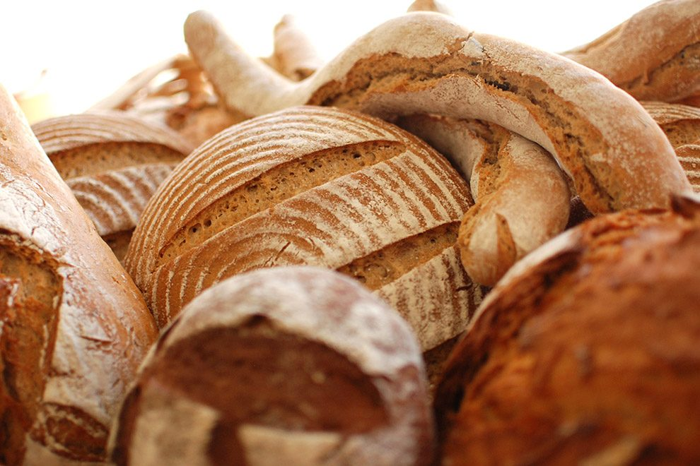
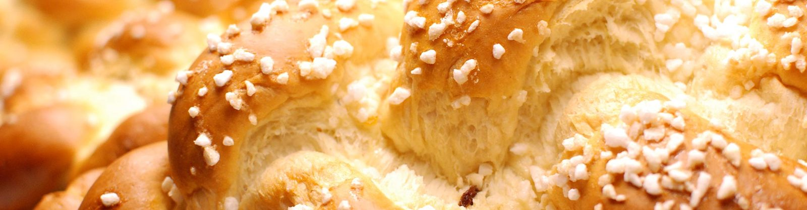

Semmerl
Knusprige Handsemmeln – der Klassiker zum Frühstück und zur Jause.
Bäckerei
Zeit, die wir uns täglich nehmen, damit sich alle natürlichen Zutaten perfekt entfalten können.

Impression aus unserer Backstube.
Wer liebt ihn nicht, den herrlichen Duft von ofenfrischem Brot? Wir werden jeden Tag mit diesem unglaublichen Bouquet in unserer Backstube belohnt.
Backen ist für uns nicht nur Leidenschaft pur, sondern ein Stück Heimat. Wir möchten die traditionelle Backkunst für unsere Kunden bewahren und vertrauen deshalb seit vier Generationen auf überlieferte Familienrezepte, Qualität und natürliche Zutaten aus der Region. An dieser Einfachheit und Ursprünglichkeit möchten wir uns auch in Zukunft orientieren und dabei neue, innovative Wege gehen.
Vom Semmerl bis zum klassischen Sandwichwecken – unser tägliches Sortiment ist in all unseren Backshops erhältlich.
Knusprige Handsemmeln – der Klassiker zum Frühstück und zur Jause.
Gebäck, das man in der Wachau einfach kennen muss.
Kräftige Krume, kräftige Kruste – Brot, das ein paar Tage hält.
Der klassische Wecken für Belegtes und Aufstriche.
Süßes Gebäck aus der Vitrine – frisch aus der Backstube.
Knusprig frisch – der perfekte Wegbegleiter durch den Alltag.
Kennen Sie eigentlich unser Aktions-Sackerl? Knusprige Handsemmeln und frische Weckerl werden für Sie zum Mitnehmen zusammengestellt: zehn Stück Gebäck als perfekter Wegbegleiter durch den Alltag. Gibt’s bei uns jeden Morgen.

Germgebäck aus unserer Backstube.
Im Stammhaus am Marktplatz in Klein-Pöchlarn öffnet die Bäckerei von Dienstag bis Samstag von 5 bis 8 Uhr. In den Kaffeehäusern in Melk und im Nahversorgungszentrum Klein-Pöchlarn bekommen Sie Brot und Gebäck während der gesamten Öffnungszeiten.
Ab 22. September 2026: erweiterte Öffnungszeiten in Klein-Pöchlarn (NVZ) – DI–SA von 7–19 Uhr, SO und Feiertag von 10–19 Uhr.